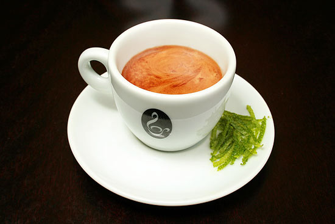
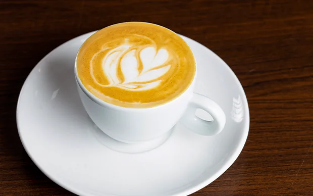
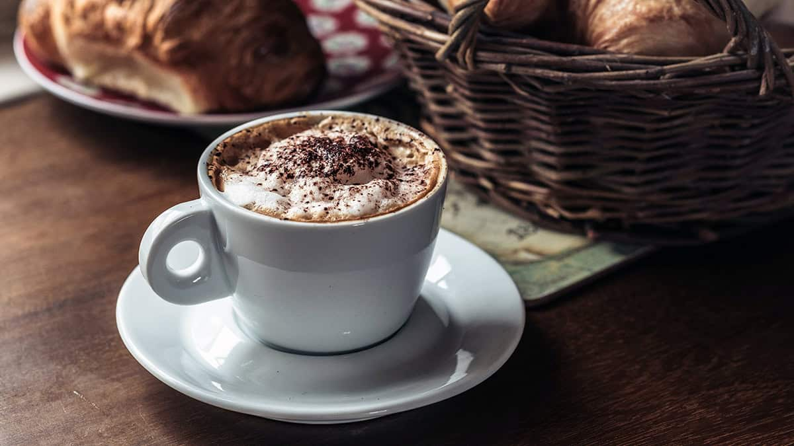

| Contato | História | Local |
|---|
Cafés

Café Passado: O café passado é uma bebida clássica e tradicional, conhecida por seu sabor rico e aroma intenso. Feito com grãos cuidadosamente selecionados e torrados, é uma opção simples e deliciosa para começar o dia ou relaxar em qualquer momento.
Preço: R$ 9,00
Preço: R$ 9,00

Café da Casa: O café caseiro é uma bebida simples e acolhedora, feita com amor e cuidado em casa. É um momento de pausa e conforto, com um aroma e sabor únicos que evocam a sensação de estar em um ambiente familiar e aconchegante.
Preço: R$ 11,50
Preço: R$ 11,50

Cappuccino Tradicional: O cappuccino tradicional é uma bebida reconfortante e deliciosa, caracterizada por uma harmonia entre o sabor forte do café espresso e a suavidade do leite vaporizado, finalizada com uma camada generosa de espuma cremosa.
Preço: R$ 10,00
Preço: R$ 10,00

Cappuccino Italiano: O cappuccino italiano é uma bebida clássica e sofisticada, conhecida por sua combinação perfeita de sabores e texturas, com uma rica essência de café e uma camada cremosa de espuma.
Preço: R$ 12,50
Preço: R$ 12,50